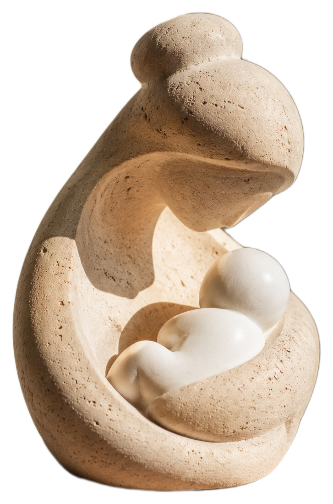
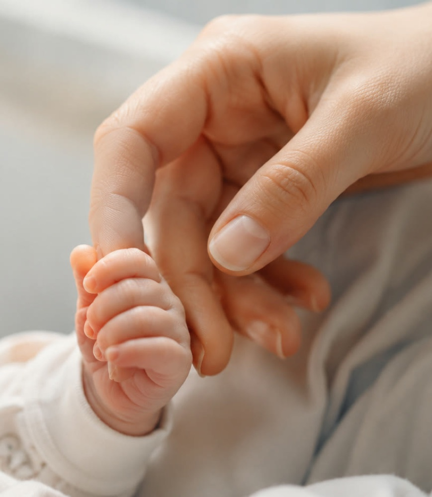
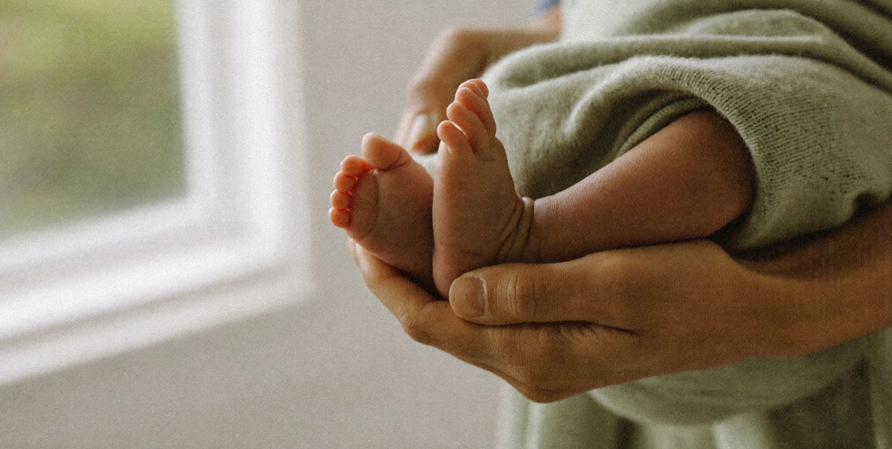
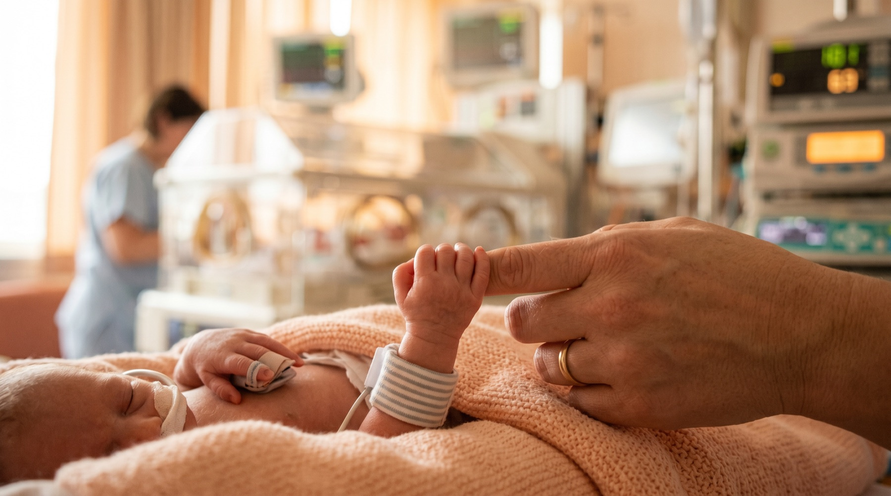
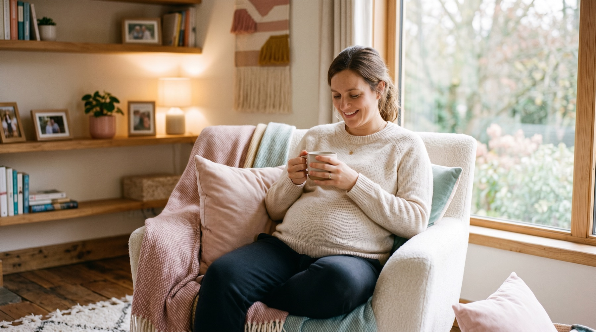

Kobiety
w ciąży
Pacjentki hospitalizowane na oddziale patologii ciąży, kobiety w ciąży powikłanej oraz mamy po porodzie i w okresie połogu.
Od pierwszych chwil życia wspieramy kobiety w ciąży, mamy po porodzie, wcześniaki i noworodki oraz ich rodziny.
Łączymy medycynę
z empatią

Dobra opieka okołoporodowa to nie tylko procedury i leczenie. To także rozmowa, zrozumienie, obecność bliskich i poczucie, że rodzina nie jest sama.

Pacjentki hospitalizowane na oddziale patologii ciąży, kobiety w ciąży powikłanej oraz mamy po porodzie i w okresie połogu.

Wcześniaki i noworodki wymagające specjalistycznej opieki oraz rodzice dzieci długo hospitalizowanych w oddziale neonatologii.
Poznaj serwis
Wybierz sekcję, która najbardziej Cię interesuje. Opowiemy, kim jesteśmy, co robimy i jak możesz pomóc.
Dla przyszłych mam
Ciąża potrafi budzić wiele pytań i obaw. Nie musisz przechodzić przez to sama. Działamy na co dzień przy oddziale i jesteśmy z Tobą od pierwszych chwil.

Z serca
Bo za każdą liczbą i każdym programem stoi prawdziwa rodzina, miłość i nadzieja.



Dołącz do nas
Każdego dnia jesteśmy blisko mam, noworodków, wcześniaków i ich rodzin. Twoje wsparcie sprawia, że ta obecność jest możliwa. Poznaj nas i zobacz, co robimy.